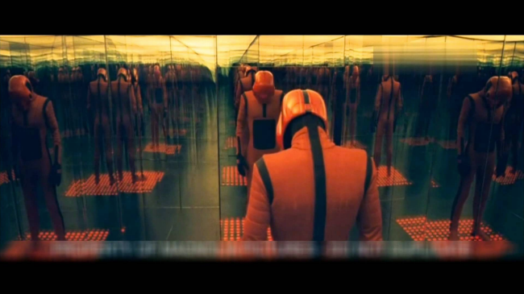
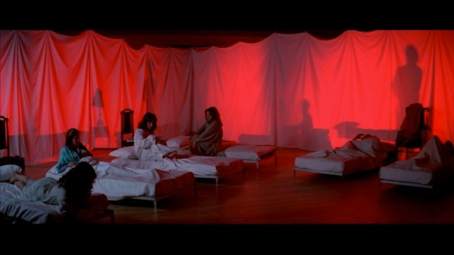
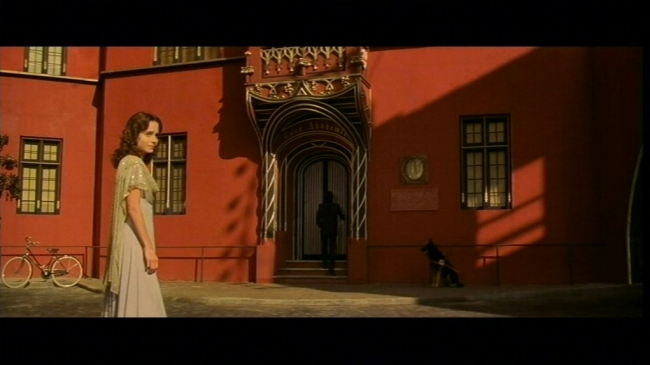
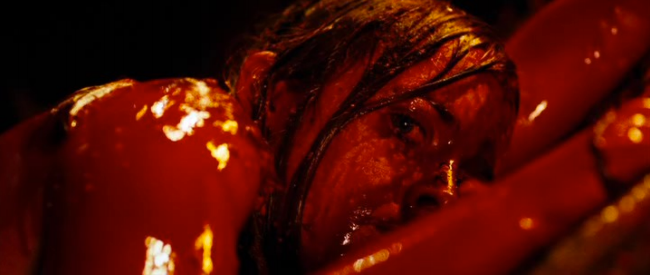
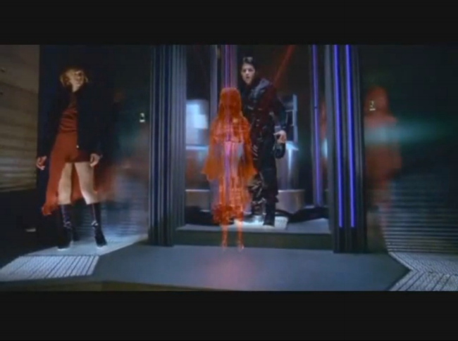
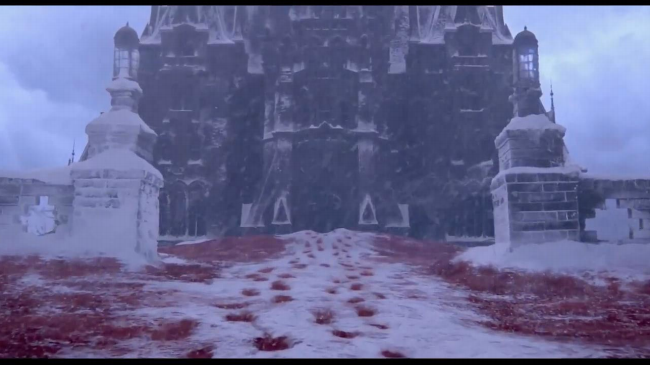
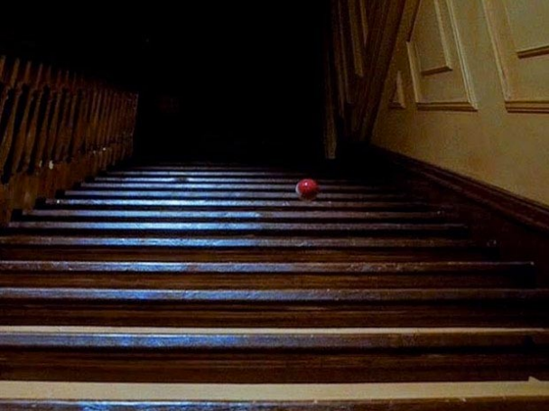
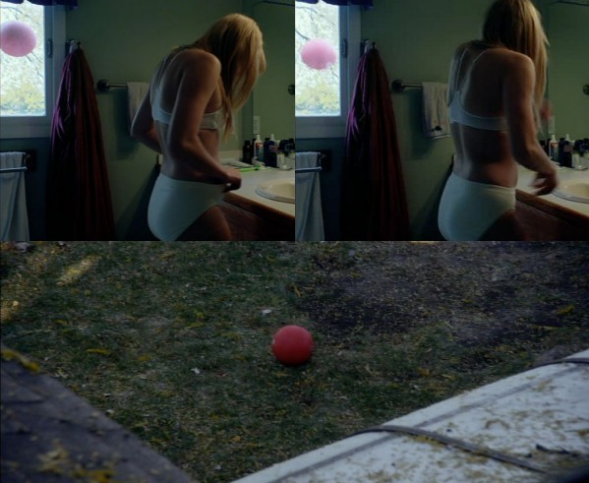
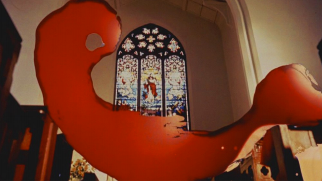

Claudel has a phrase saying that a certain blue of the sea is so blue that only blood would be more red. The color is yet a variant in another dimension of variation, that of its relations with the surroundings: this red is what it is only by connecting up from its place with other reds about it, with which it forms a constellation, or with other colors it dominates or that dominate it, that it attracts or that attract it, that it repels or that repel it. In short, it is a certain node in the woof of the simultaneous and the successive. It is a concretion of visibility, it is not an atom. The red dress a fortiori holds with all its fibers onto the fabric of the visible, and thereby onto a fabric of invisible being.i
At last a steady twilight brooded over the earth, a twilight only broken now and then when a comet glared across the darkling sky. The band of light that had indicated the sun had long since disappeared; for the sun had ceased to set—it simply rose and fell in the west, and grew ever broader and more red. All trace of the moon had vanished. The circling of the stars, growing slower and slower, had given place to creeping points of light. At last, some time before I stopped, the sun, red and very large, halted motionless upon the horizon, a vast dome glowing with a dull heat, and now and then suffering a momentary extinction.ii

Red is an affective place holder in horror film, between what has happened and its repetition in the time of the film: the on-screen violence promised by a curse or a trauma to be re-redeployed. Red has an affective put temporally traceable function between the long-haul time scale of Wells' extinction event, and the present contextualization of red in Merleau-Ponty's case following Claudel's turn of phrase. Or, to put things another way, the redness of red is as much of an immediate warning as it is the eventual saturation as the very violence of time (with the film itself being a red slice of this braid of slow and quick violence). Taking a leap from the above image taken from Beyond the Black Rainbow, red is the permitted sign of once and future mind-invasion. In this sense, and again pointing to Merleau-Ponty's invocation of Claudel, the excess of blood in horror attaches itself to this function but is not equatable to it.
On one scale of time, the streaks of red in horror cinema are indicative of promised blood, of the violence that will unfold while its particular targets, or at least the order in which they will be dispatched, remains uncertain. One can think of seemingly endless flows of red curtains in Dario Argento's films, and Suspiria in particular. The starkness of red on white, (or against black and white tiles) even in more muted tones in the case of the dance school's exterior, index the creeping threat of puberty and its entanglement with sexual violence.


Yet, despite this, the film shows restraint in minimizing the role of male characters, or at least of stereotypical male characters, thereby emphasizing the strangeness of the coming red days for the girls at the school.
There is also the longer play of the red of blood, that the inevitability of violence is tied to our base matter, of the eventual expiration of human life red-lit by a dying sun. Where the heaviness and ubiquity of iron (the common corpse-stuff of dead stars) finds itself again between solar and terrestrial chemistry. A total saturation of red is the last alarm light of a doomsday scenario, or, more 'optimistically,' the hue of the the traumatic transformation point of the final girl before the revenge program is activated.iii

Sarah's transformation in The Descent is the minor realization of a personal betrayal which feeds into her becoming the destroyer of the subterranean creatures that hunt her and her friends. Her literal baptism in blood signals the final step into the figure of the final girl, of that figure which begins as apparently random acts of violence in response to a more calculated program of retaliation. The torch lit reflected-red light of the primordial cave.

To erase this difference within and central to the transformation would be to perpetuate the collapse of two shades (and functions) of red, the figure of the Queen of Hearts and the Red Queen, of passionate fury and a disciplined one. The Red Queen of Resident Evil properly represents the cool madness of the latter, it is the embodiment of a calculating alarm system that is no less deadly.
This mode, this particular use of red, concatenates, compresses geologically wide and deep bands of trauma into an action plan. Red, in its broad use in horror, is just a generic warning about the coming violence that is neither in terms of visual structure (editing, pacing) or more recognizable anticipatory intensifiers (sound, slow reveal of the threat, etc).
Del Toro's recent ghost story Crimson Peak takes this logic to its extreme and, in turn, indexes the geological or accrued and obscured nature of trauma as geological, as pain and violence layered in secret and hardened bands. The mines of red clay beneath the manor central to the film are incidental to the plot other than as that which drives the economy both of action and of capital in the film's antagonists. The sheer amount of the red clay punctuates the comparatively small amount of blood that is subsequently released through the violence exchanged between the human characters. The blood red becomes a small selection and dark (literally in terms of shade) of the surfeit of red clay in its excavation and storage down below.

Yet another temporal-affective mode of red is common in horror films. Different from the more ambient functions discussed above, the red ball is a punctuated non-blood instance of red that announces the supernatural, particularly, in the form of the child.
The red ball weighs higher on the affective side (more playful warning then clue) while the red coat, or red jumper, points to the disruption of time. The former is most famous in the film The Changeling (and is cited in the aforementioned Crimson Peak). The red ball is the menacing (but still partially childish) invitation to leave the childish space, to move from the space of the spirit as a nuisance to a spirit as a legitimate danger.

The half-threatening red ball is over done, in an arguably comic fashion, in David Robert Mitchell's It Follows for the opposite effect. Though interestingly, and to point back to the figure red queen (and the evolutionary theory that bears her name), It Follows implicitly suggests an open sexual ethics as the best means for curse avoidance in direct opposition to the virgin survives logic so central to the final girl though this was disrupted in the 80s and 90s.

The red ball is an invitation one shouldn't accept. We know Danny should refuse when the twins in The Shining creepy unison state “Come Play with Us.”
The red coat, the red jumper, is about a disturbing presence most famously taken as the mobile, and undying effect, of the red streak of trauma from the gloriously constructed opening scene of Don't Look Now. The streak becomes the mark of the daughter's death and her subsequent haunting of her parents albeit in different modes. Her red raincoat becomes the thread which convinces the father, and the viewer, that there is temporal continuity when there is not. Whereas the beginning of the film suggests an immediate future (as warning) can invade the present, the film from then on collapses the future and the present. Sutherland's character is haunted by the red streak of the opening scene the marks his daughter's loss but whether it is one of death, or one of her temporal displacement, remains unclear even after his own death.

The red smear is the obscure shape that carries on the trauma (instead of it being housed in the figure of the final girl, twisting inside her psyche). Don't Look Now allows the mother (Laura) to survive the haunting of the trauma, unlike the father, not by herself being the last girl, but by accepting the temporal displacement of her daughters death through her engagement with the figure of the elderly sisters, one of whom is psychic. Laura is spared because she recognizes time is out of joint and accepts the warnings that John ignored from the very opening of the film.
The affective register of red, of the temporal twist of violence occurred and violence to happen, imperfectly mirrors the red twist of the geological and the traumatic, the iron redness of the blood and the bloated red giant that will be the last brutal lord to hover over the baked corpses of the final human spawn.
--------
i Maurice Merleau-Ponty, The Visible and the Invisible, 132.
ii H.G. Wells, The Time Machine, unpaginated. Available http://www.bartleby.com/1000/11.html
iii See Benedict Singleton's “The Last Girlscout”